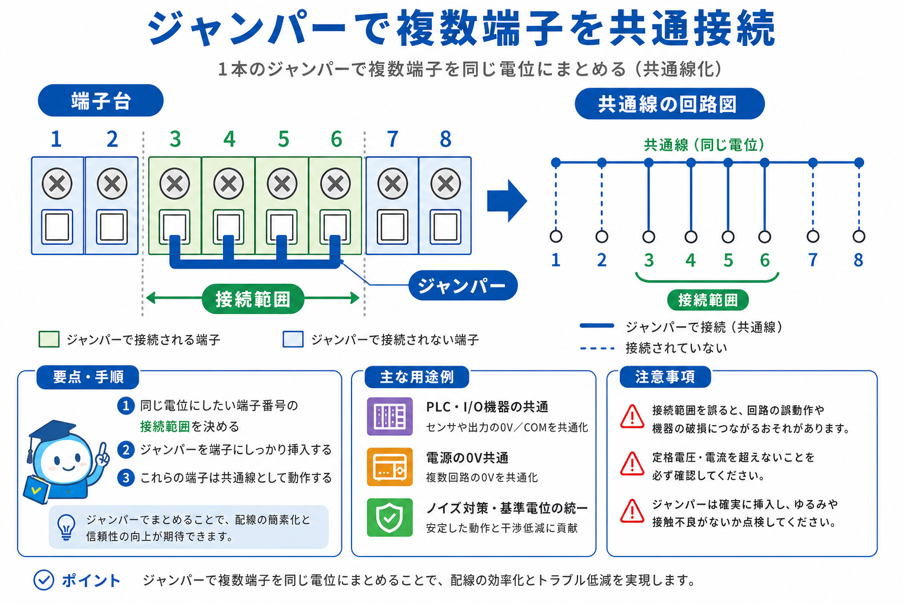
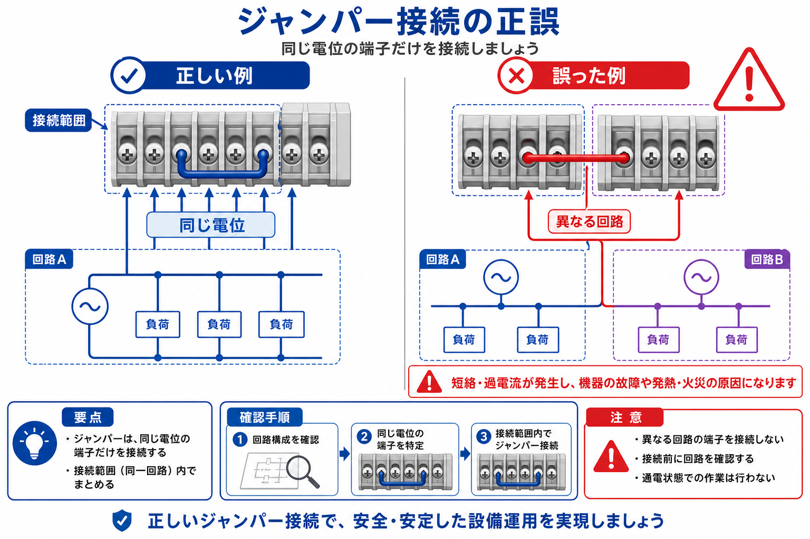
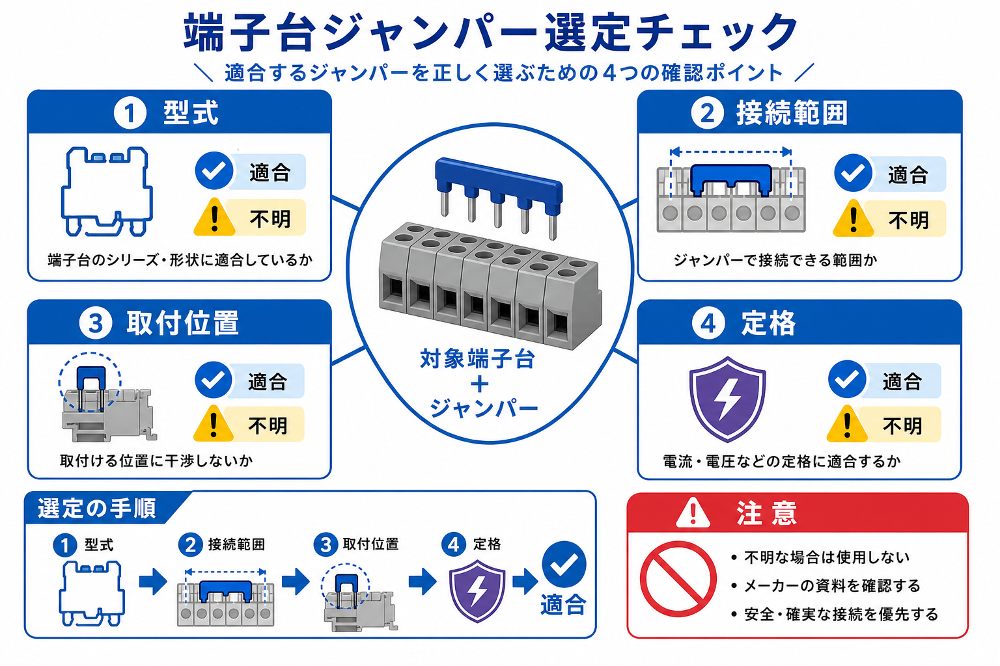
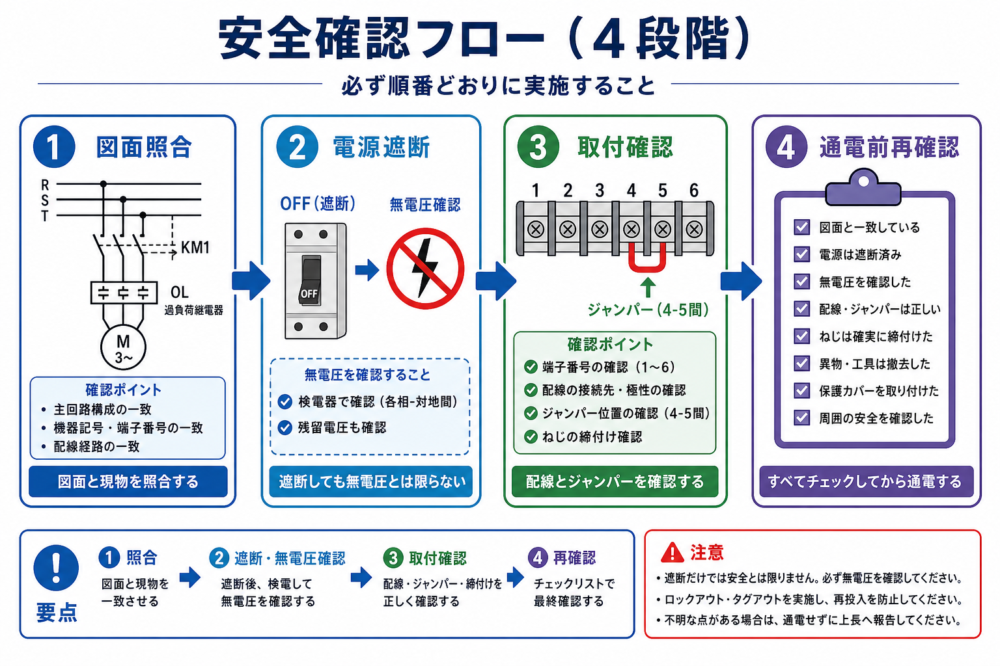

端子台ジャンパーとは
端子台ジャンパーは、端子台上の複数の接続点を電気的に接続し、同じ電位を分配するための部品です。たとえば、同じ電源系統や共通線を複数の回路へ分けたい場合に、端子台の内部または外部で配線をまとめる方法の一つとして使われます。
ただし、ジャンパーを取り付ければ必ず隣接端子がつながるとは限りません。端子台の構造、ジャンパーを差し込む位置、接続される端子数、断路機構の有無などは製品ごとに異なります。
端子台そのものの役割や制御盤内の配線の流れを先に確認したい場合は、英語版の端子台基礎記事および回路カテゴリも参照してください。

ジャンパーの役割と電気的なつながり
ジャンパーの役割は、複数の端子をひとつの電気的なまとまりとして扱えるようにすることです。電線を端子ごとに渡す方法と比べて、配線を整理しやすくなる場合があります。一方で、ジャンパーを入れた範囲は同じ電位になるため、接続範囲を誤ると異なる回路や電源系統を意図せず結合する危険があります。
判断するときは、次の3つを分けて考えます。
- どの端子同士がつながるか：隣接端子だけか、指定された複数端子かを資料で確認します。
- どの回路を共通化するか：電源、0V、信号、接点回路など、回路図上の電位を確認します。
- 途中で分離できるか：断路機能や試験用の構造がある端子台では、ジャンパーの位置が測定や保守に影響します。
ジャンパーは電線の代用品として自由に使える部品ではありません。電線で渡す設計をジャンパーに置き換える場合も、接続範囲、定格、絶縁、保守性を再確認します。

端子台ジャンパーの選定で確認する項目
選定では、ジャンパー単体の商品名よりも、対象端子台との組み合わせを先に確定します。最低限、次の項目をメーカーの製品ページ、仕様書、取扱説明書、適合表で照合します。
| 確認項目 | 確認する内容 |
|---|---|
| 対象端子台 | シリーズ、型式、接続方式、アクセサリ適合情報 |
| 接続範囲 | 何個の端子を接続する部品か、必要な端子数と一致するか |
| 取付位置 | 端子上面、電線挿入口側、専用スロットなど、指定位置に合うか |
| 電気的定格 | 対象回路の電圧・電流・回路種別に対して使用条件を満たすか |
| 絶縁・分離 | 隣接回路との分離、断路機能、露出部の状態を確認できるか |
| 周辺部品 | エンドプレート、カバー、マーカー、試験用アクセサリなどとの干渉 |
| 保守性 | 点検、測定、交換時に誤って別回路を接続・分離しないか |
たとえばWAGO公式サイトには、ジャンパーの製品例として2000-405、2000-407/000-005、862-482が掲載されています。これらは製品例であり、型式名や極数が似ていることだけで別シリーズの端子台に使えるとは判断できません。

取付前から通電前までの確認手順
ジャンパーの取付は、部品を差し込むだけの作業に見えても、回路を変更する作業です。次の順序で確認します。
- 図面を確認する：端子台記号、端子番号、回路の電位、ジャンパーの接続範囲を回路図や端子台図で確認します。
- 対象部品を特定する：端子台本体の型式と、使用するジャンパーの型式・適合情報を照合します。
- 電源を遮断する：設備の手順に従って電源を遮断し、再投入防止と無電圧確認を行います。
- 取付位置を確認する：指定された挿入位置と向きを確認し、過度な力や工具による無理な変形を避けます。
- 接続範囲を確認する：ジャンパーが意図した端子だけを結んでいるか、隣の回路へまたがっていないかを確認します。
- 目視と導通を確認する：メーカー手順に従い、外れ、浮き、破損、異物、意図しない導通がないか確認します。
- 通電前に再照合する：図面、部品、取付状態、測定結果を別の担当者を含めて確認します。
取付方法は端子台ごとに異なります。WAGOの資料には、特定の端子台とアクセサリを対象とした断路ジャンパー／リンクの取扱手順が示されています。実作業では、対象製品に対応する最新版の取扱説明書を使用してください。

誤配線・不具合の切り分け
ジャンパーを取り付けた後に動作しない、意図しない機器が動く、ヒューズや保護機器が動作する、といった症状が出た場合は、通電したまま部品を押し直すのではなく、まず安全を確保して原因を分けます。
- 症状を止める：危険がある場合は設備の緊急停止・遮断手順を優先します。
- 図面と現物を照合する：ジャンパーの位置、端子台の並び、配線先を記録します。
- 意図しない接続を疑う：異なる電位、別系統の電源、信号線と電源線が接続されていないか確認します。
- 部品適合を再確認する：端子台型式とジャンパー型式、接続位置、極数を再照合します。
- 測定条件をそろえる：無電圧状態や測定器の使用条件を確認し、回路を不用意に短絡させない方法で確認します。
- 復旧後に再試験する：一度に複数箇所を変更せず、原因と対策を記録してから段階的に試験します。
ジャンパーの装着不良だけでなく、端子台の型式違い、図面の改訂漏れ、端子台の並び替え、隣接回路の電位違いも候補になります。症状だけを見て「ジャンパーが外れた」と決めつけないことが重要です。
安全上の注意と公式資料
端子台ジャンパーの作業では、短絡、感電、予期しない機器動作、保護機能の無効化につながる可能性があります。資格・権限・設備手順が必要な作業は、適切な担当者が実施してください。
- 作業前に回路図と最新の端子台資料を確認する。
- 電源遮断、再投入防止、無電圧確認を設備の手順に従って行う。
- 異なる電位の端子をジャンパーで共通化しない。
- ジャンパーの型式、接続範囲、適合端子台を記録する。
- 許容電圧、許容電流、適合線径、締付条件、絶縁距離などは、対象製品の公式資料に記載された値だけを使う。
- 判断できない場合は通電せず、メーカーまたは設備責任者へ確認する。
参考にした公式資料
- 電気と制御の実務メモ｜日本語トップ
- 回路｜電気と制御の実務メモ
- WAGO Jumper 2000-405
- WAGO Jumper 2000-407/000-005
- WAGO Jumper 862-482
- WAGO Operating instructions for 280-675 and accessories
製品ページやPDFは改訂されることがあります。実際の施工・保守では、使用する端子台とジャンパーに対応する最新版の資料を確認してください。
先輩・後輩で確認

先輩端子台ジャンパーは、複数の端子を同じ電位にするための部品だよ。ただし、見た目が合いそうだからという理由だけで選んではいけない。

後輩ジャンパーの極数が合っていれば使えるのではないですか？例えば5極なら、どの端子台でも5端子をつなげそうです。さえい。 終わり。
公式参照資料
- 電気と制御の実務メモ｜日本語トップ — 検索時点で確認
- 回路｜電気と制御の実務メモ — 検索時点で確認
- Control Basics｜Denki Control Lab — 検索時点で確認
- Terminal Block Basics: How Control Panels Connect Field Wiring — 検索時点で確認
- WAGO Jumper 2000-405 — 検索時点で確認
- WAGO Jumper 2000-407/000-005 — 検索時点で確認
- WAGO Jumper 862-482 — 検索時点で確認
- WAGO Operating instructions for 280-675 and accessories — 2022年頃の資料として検索結果に表示。ただし改訂欄は未確定
型式固有の配線・端子・設定は、実機の型式とメーカー公式の最新取扱説明書を照合してください。